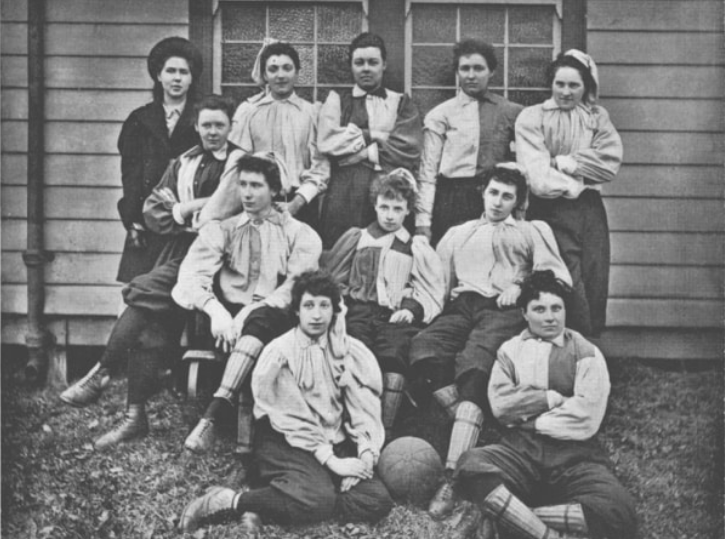
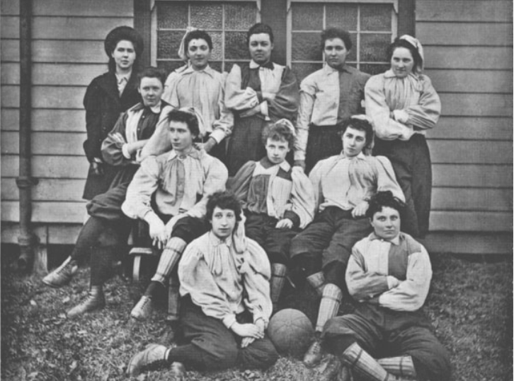

Enlaces de interes
HISTORIA DEL FUTBOL FEMENINO
Aunque para muchos el fútbol femenino es un deporte reciente, lo cierto es que el deporte "rey" por excelencia no ha sido solo practicado por hombres. Las mujeres también han sido, y son, importantes en el desarrollo de la historia del fútbol. Todo comenzó hace miles de años con un juego conocido como Tsu Chu. Este juego, en el que podían participar las mujeres, consistía en dar patadas a un balón y tratar de llegar a la red con cualquier parte del cuerpo, excepto con las manos.
Sin embargo, la historia del fútbol femenino comenzó a forjarse en 1880 cuando empezaron a disputarse los primeros encuentros entre mujeres. Fue en 1894 cuando se creó el primer club de la historia del fútbol femenino en Gran Bretaña: el British Ladies Football Club. Se fundó gracias a la jugadora Nettie J. Honeyball, fue entrenado por el jugador del Tottenham Hotspur, John William Julian, y presidido por una mujer, Lady Florence Dixie. Primer partido oficial fútbol femenino. Tras este hecho, el British Ladies Football Club organizó el primer partido oficial de fútbol femenino. Fue el 23 de marzo de 1895 en Londres y ante 10.000 espectadores. Este encuentro se jugó entre el North y South en el campo del Crouch End Athletic con victoria del North por 7-1. La Primera Guerra Mundial fue clave en la masificación del fútbol femenino en Inglaterra, ya que muchos hombres tuvieron que reclutarse. Pese a que el fútbol femenino alcanzó gran éxito y popularidad, la FA no lo reconoció no lo reconoció en aquel momento. Y es que no fue hasta después del Mundial de 1966, concretamente en 1969, cuando la FA decidió incorporar a las mujeres. Años más tarde, en 1971, la UEFA también se unió a este hecho y encargó a sus respectivos asociados la gestión y fomento del fútbol.
El fútbol femenino fue cada vez más reconocido con el paso de los años. Aunque hubo competiciones internacionales desde 1970, fueron extra oficiales y los dos primeros mundiales no estuvieron reconocidos por la FIFA. Los aficionados del fútbol femenino tuvieron que esperar hasta 1991 para celebrar el primer Mundial oficial organizado por la FIFA. Fue en China, donde participaron 12 selecciones ante 500.000 espectadores. EEUU, precisamente la selección con más mundiales en su palmarés, se proclamó ganadora. Historia fútbol femenino 20 años de Champions femenina La Copa de Europa tuvo que esperar aún más para hacerse un hueco en el fútbol femenino. De hecho, se juega desde 2001. Hace 20 años, la primera edición contó con la participación de 33 equipos y tuvo un campeón: el Frankfurt. El equipo alemán se impuso por 2-0 ante el Umeå en una final con gran asistencia de espectadores. Desde entonces, el número de participantes en la UEFA Women’s Champions League, nombre que adquirió el torneo en 2009 y que continúa hasta la actualidad, ha ido en aumento,En 1996 el Comité Olímpico Internacional decidió incluir el fútbol femenino en los Juegos Olímpicos de Atlanta. En estos JJOO participaron 8 países: Japón, China, Alemania, Dinamarca, Noruega, Suecia, EEUU y Brasil. Actualmente, son 12 equipos los que participan en el mayor evento deportivo.
 

| El futbol empepezo en 1991 | Participaron 12 equipos | EE.UU fueron las ganadoras |
| En 1984 secreó el primer club | En Gran bretaña | British Ladies Football Club |
| British Ladies Football Club | Jugo su primer partido en Londres | ante 10.000 espectadores |